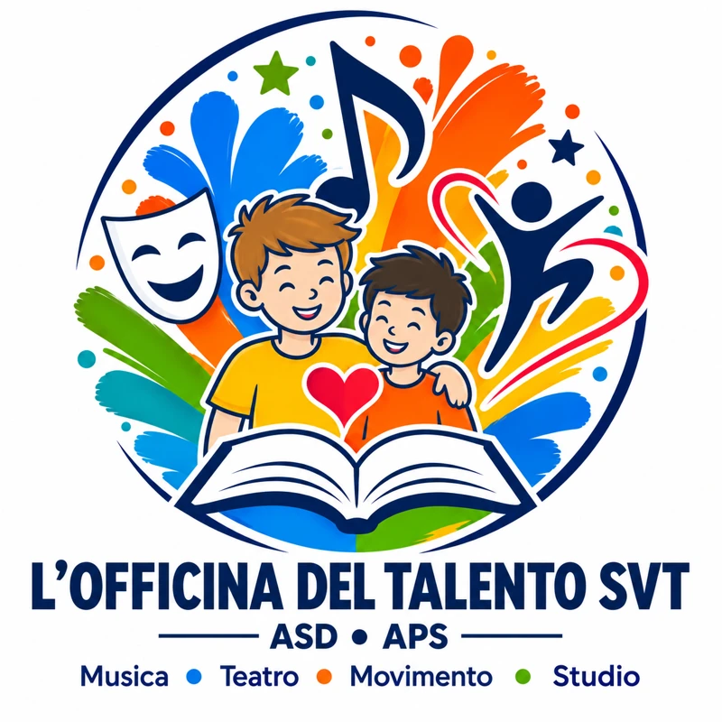

Studio
Supporto nei compiti e occasioni per sviluppare autonomia e fiducia.

A San Valentino Torio, un progetto per accompagnare i bambini con studio assistito, musica, teatro e movimento, affiancando le famiglie in uno spazio accogliente.
San Valentino Torio · Bambini di 6–11 anni
Apertura prevista: agosto–settembre 2027. Sede in corso di definizione.
Sfondo: rappresentazione illustrativa del progetto. La sede è in corso di definizione.
Vogliamo creare un ambiente accogliente dove ascolto, rispetto, inclusione, creatività e collaborazione accompagnino la crescita.
Supporto nei compiti e occasioni per sviluppare autonomia e fiducia.
Ascoltare, sperimentare e dare spazio all’espressione personale.
Immaginare, comunicare e imparare a collaborare.
Gioco, attività motoria e relazioni positive.
I moduli si aprono anche dal telefono, senza account. La segreteria riceverà i tuoi dati e ti ricontatterà per i prossimi passi.
Come trattiamo i dati: leggi l’informativa privacy generale. Ogni modulo contiene anche la propria informativa specifica.
Vuoi esserci? Pre-prenota subito per il tuo bambino!
Un piccolo passo per te, un aiuto concreto per far partire l’Officina.
Pre-prenota subito per il tuo bambinoGratis e senza impegno. La pre-prenotazione non garantisce il posto.
Desideri sostenere il progetto con una donazione liberale? Lasciaci i tuoi dati: la segreteria ti ricontatterà per concordare i prossimi passi.
Comunica il tuo interesse a donareCompilare il modulo non comporta impegni né pagamenti.
L’Officina del Talento SVT – ASD • APS è in fase di preparazione. Prima di avviare le attività, vogliamo costruire basi organizzative ed economiche solide, per offrire ai bambini e alle famiglie uno spazio che possa durare e crescere nel tempo.
L’Officina del Talento SVT – ASD • APS è già costituita, dispone di codice fiscale e partita IVA ed è iscritta al Registro Unico Nazionale del Terzo Settore (RUNTS), nella sezione Associazioni di Promozione Sociale.
È affiliata a OPES – Organizzazione per l’Educazione allo Sport, ente di promozione sportiva riconosciuto dal CONI.
La struttura associativa, le responsabilità e l’organizzazione delle attività sono già definite.
L’apertura è prevista indicativamente tra agosto e settembre 2027. La data definitiva sarà annunciata dopo aver completato gli spazi, lo staff e le risorse necessarie per avviare le attività e sostenerle nel tempo.
Stiamo valutando uno spazio nel territorio di San Valentino Torio, adatto allo studio assistito, ai laboratori e ai momenti di gioco.
La scelta non è ancora definitiva: terremo conto anche delle pre-prenotazioni ricevute per individuare spazi, capienza e costi adeguati alle famiglie interessate.
Presenteremo l’indirizzo e gli ambienti prima delle iscrizioni definitive.
La composizione dello staff è in fase di completamento. Le persone saranno selezionate in base a qualifiche, competenze ed esperienza adeguate al ruolo e al lavoro con i bambini. Ogni incarico sarà affidato con attenzione alle attività da svolgere e alle esigenze dei più piccoli.
Presenteremo le persone che seguiranno i bambini e i loro ruoli quando gli incarichi saranno confermati.
L’associazione si sosterrà con il contributo di tutti noi associati, compresi i promotori, e con le donazioni liberali di chi desidera aiutarci.
Per partecipare alle attività è previsto un contributo mensile, da definire in base ai costi effettivi. L’obiettivo è offrire un percorso accessibile, con un risparmio rispetto alla frequenza separata di studio assistito, musica, teatro e movimento, garantendo qualità e continuità.
Importo, attività comprese e modalità di iscrizione e pagamento saranno comunicati prima delle adesioni definitive.
È un primo segno di fiducia: ci aiuta a conoscere le famiglie interessate, stimare le possibili iscrizioni e organizzare il progetto.
Non è un’iscrizione, non conferma il posto e non comporta impegni né pagamenti. Ricevute tutte le informazioni, ogni famiglia potrà decidere liberamente se iscriversi.
Seguiteci sui nostri canali social per conoscere i progressi e le novità. Condivideremo le conferme concrete, indicando con chiarezza ciò che è ancora in preparazione.
Per informazioni e domande, scriveteci attraverso i contatti dell’associazione: saremo felici di parlarne con voi.
Coltiviamo il talento, costruiamo il futuro.
Puoi sostenere l’associazione con un’erogazione liberale di importo liberamente scelto. Ogni contributo aiuta a costruire il progetto educativo per i bambini, le famiglie e il territorio.
Il sostegno contribuirà alle necessità del progetto: materiali didattici e creativi, strumenti per i laboratori di musica, teatro e movimento e organizzazione delle attività.
Il progetto sta già ricevendo aiuti concreti: un pianoforte, una chitarra e una batteria sono stati messi a disposizione per essere donati ai futuri laboratori musicali.
Scopri la brochure, il video e le slide per conoscere obiettivi, attività e valori.
Compila subito il modulo donatori con i tuoi dati, senza impegni né pagamenti.
La segreteria ti ricontatterà per rispondere alle domande e concordare i prossimi passi.
Le erogazioni liberali possono beneficiare di agevolazioni fiscali, nei limiti e alle condizioni previsti dalla normativa. Verifica con il tuo commercialista come usufruirne.
Vuoi mettere le tue competenze al servizio della crescita dei bambini? Inviaci il tuo curriculum e raccontaci come vorresti contribuire a L’Officina del Talento SVT.
Valuteremo ogni profilo professionale coerente con le attività e i valori dell’associazione, per possibili rapporti di lavoro dipendente o collaborazioni, in base alle esigenze organizzative e alle risorse disponibili.
Potrai inoltre manifestare interesse per eventuali futuri progetti di Servizio Civile Universale. Se attivati, comunicheremo i bandi e le modalità ufficiali di candidatura.
Compila la scheda con i tuoi contatti, le competenze, l’ambito di interesse e la disponibilità. Puoi allegare direttamente il tuo curriculum vitae in PDF, fino a 10 MB.
Non serve un account. Al termine dell’invio riceverai una conferma con il riferimento della candidatura. I dati e il curriculum saranno consultabili solo dall’amministrazione e dalla segreteria autorizzate.
Per informazioni: lofficinadeltalentosvt@gmail.com. La candidatura spontanea non garantisce un incarico o un’assunzione. Per eventuali progetti di Servizio Civile Universale restano valide le modalità e i bandi ufficiali.
Condividi questa pagina con chi crede nella crescita dei bambini. Se sei un’azienda, puoi conoscerci, scegliere liberamente di sostenerci e contribuire a creare nuove opportunità nella nostra comunità.
La Presidente
Marianna Adinolfi
lofficinadeltalentosvt@gmail.com
PEC: lofficinadeltalentosvt@pec.it
Scrivi su WhatsAppPuoi contattarci per informazioni oppure scegliere uno dei moduli presenti in questa pagina.